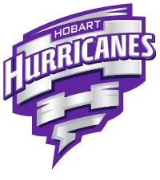
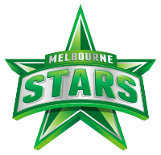
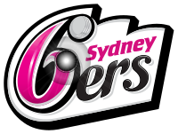
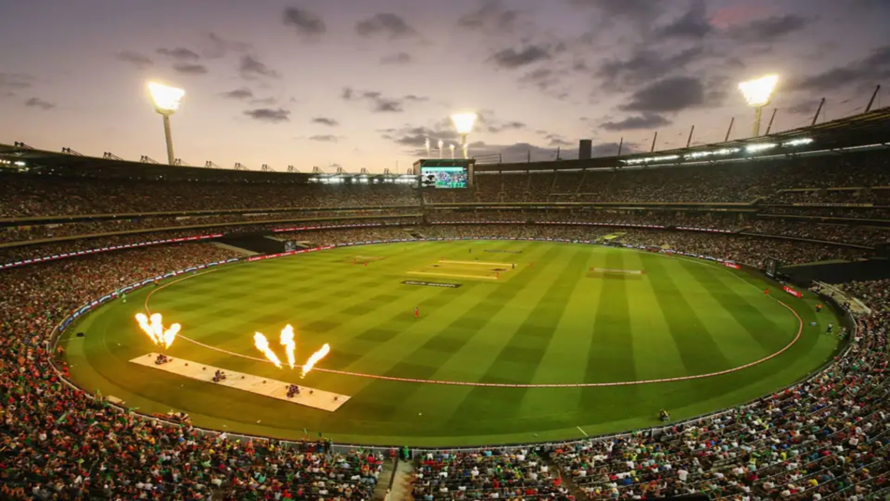

La Big Bash League (BBL) es la principal liga de cricket de Australia y se juega en formato Twenty20 (T20). Inaugurada en 2011, la BBL es administrada por Cricket Australia y se lleva a cabo durante el verano australiano, generalmente entre diciembre y febrero.
La liga cuenta con equipos franquiciados representando ciudades importantes de Australia, como Sydney, Melbourne, Brisbane y Perth, entre otras. La BBL es conocida por su atmósfera festiva y sus emocionantes partidos, a menudo jugados en estadios llenos de seguidores apasionados.
A lo largo de los años, la BBL ha atraído a una gran cantidad de talento de cricket nacional e internacional, lo que la convierte en una de las ligas de T20 más competitivas del mundo.
   